Chapter 3 Data wrangling
In this chapter, you’ll learn to efficiently explore your data. This includes understanding how the data is structured, what “dimensions” are in a dataset, how to manipulate the data and visualise it. Efficient data exploration and wrangling are the basis for generating hypotheses, testing them, and repeating the wrangling-visualisation-hypothesis circle over and over. That’s science.
R offers great functionalities for achieving efficient data wrangling and visualisation, particularly using functions from the tidyverse. (Formulating the hypotheses is still up to humans). You’ve already got in touch with some of the functions of the tidyverse. This chapter will introduce some more of the basic and most important tidyverse functions, including ggplot. The contents of this tutorial are inspired by the (freely available online-) book R for Data Science by Grolemund & Wickham.
After you’ve gone through the lecture and solved the exercises you should be able to: - Define data, understand the structure of data and list examples of environmental data. - List the various possible data types and formats. - Explain the possible sources of data in environmental data science. - Define metadata. - List the various possible data pre-processing methods. - Understandtidy data and data dimensions. - Learn how to plot data. - Apply data aggregation. - Apply data cleaning and gapfilling.
3.0.1 Data transformation with dplyr
In video 2c, you’ve been introduced to the “dimensions” of data and some of the essential functions of the tidyverse package dplyr:
- Picking observations by their values:
filter() - Picking variables by their names:
select() - Creating new variables:
mutate() - Aggregating multiple values down to a single summary:
summarise()
Remember also that dplyr functions (sometimes, they are called “verbs”) all work similarly:
- The first argument is the data frame. When using pipes (
%>%, see Chapter 1), the first argument specifying the data frame is omitted and the function takes its place. What’s being piped into it, “coming” from the left side of%>%. - The remaining arguments specify what to do with the data frame (without quotes (
"") on variable names). - The output of the function is again a data frame.
3.0.2 Data visualisation with ggplot2
In the same video (2c), we learned about data visualisation with the tidyverse package ggplot2. Remember the steps for creating a figure with ggplot2:
Start by calling the function ggplot():
- As a first argument, it takes the data frame, that contains the values that are to be displayed in a figure.
- The second argument is the “mapping” argument and always comes in the form of aes(...). Inside the brackets, we usually indicate the column (variable) that specifies the coordinate of a visualisation element (e.g., a point) along the x-axis with x = ..., and along the y-axis with y = ....
Then, add an additional function call to the initial ggplot(), with a + to specify the type of visualisation element (e.g., points, or lines, etc.) that maps the variable values to the plot coordinate space (for example x-y). The ggplot-+ works a bit like the pipe operator %>%. This function call now specifies the type of plot to create. The name of this function starts with geom_. For example, to plot points of temperature at a given time from a data frame df into x-y space (a scatterplot), we would write something like:
ggplot(data = df, aes(x = time, y = temperature)) +
geom_point()3.1 Hands-on
3.1.1 Dataset 1 (half-hourly flux data)
After learning about some basic concepts and functions for data wrangling and visualisation, let’s get our hands on the data. As in previous exercises, we’ll be using the time series data from eddy covariance flux measurements and meteorological variables measured in parallel. In this sub-section, we start with half-hourly data from a flux tower near Zürich (CH-Lae, located on the Lägern mountain between Regensberg and Baden and run by our colleagues here at ETH). The data covers years 2004-2014 at a half-hourly time step. That’s a lot of data and will most likely drive Excel to desperation. That’s ok. In this course, you’ll learn to do your data wrangling fully outside of Excel and you’ll see how it improves your life as a (data) scientist considerably.
Every research project starts with a broad overall question. In this course, we are guided by the question about the variations and controls of ecosystem-level gross primary production (GPP). GPP is the gross carbon assimilation by photosynthesis of all plants in the “footprint” of an eddy covariance tower and can be derived from the measurement of the vertical turbulent net flux of CO2 (on the basis of vertical air movement and parallel CO2 concentration measurements). “Gross” because plants simultaneously respire CO2 as they assimilate it and this also during the night. Several assumptions have to be made to get to the final GPP time series. In our dataset, different GPP time series are available and are derived using different assumptions. Below, we’ll work with the one called GPP_NT_VUT_REF.
Now that we roughly know what to expect from the contents of our dataset and we have a research question in mind (controls and variations of GPP), we can start searching for answers by reading, transforming, visualising, and modelling our data. Based on what we learn from this initial exploratory data analysis, we will refine our research question, focus it, and follow it up with the next level of data analysis and modelling in later chapters.
3.1.1.1 Variables in a data frame
Let’s read in the half-hourly data from the eddy-covariance site CH-Lae again (as we did already in Chapter 1) and have a quick look at it. We use the function read_csv() from the readr package here for reading the CSV since it’s faster than the base-R read.csv() and generates a nicely readable output when printing the object. You can find more information about reading data with read_csv() here.
library(tidyverse)
hhdf <- read_csv("./data/FLX_CH-Lae_FLUXNET2015_FULLSET_HH_2004-2014_1-3.csv")
hhdf## # A tibble: 192,864 x 235
## TIMESTAMP_START TIMESTAMP_END TA_F_MDS TA_F_MDS_QC TA_ERA TA_F TA_F_QC
## <dbl> <dbl> <dbl> <dbl> <dbl> <dbl> <dbl>
## 1 200401010000 200401010030 -9999 -9999 -2.22 -2.22 2
## 2 200401010030 200401010100 -9999 -9999 -2.25 -2.25 2
## 3 200401010100 200401010130 -9999 -9999 -2.28 -2.28 2
## 4 200401010130 200401010200 -9999 -9999 -2.50 -2.50 2
## 5 200401010200 200401010230 -9999 -9999 -2.72 -2.72 2
## 6 200401010230 200401010300 -9999 -9999 -2.94 -2.94 2
## 7 200401010300 200401010330 -9999 -9999 -3.17 -3.17 2
## 8 200401010330 200401010400 -9999 -9999 -3.39 -3.39 2
## 9 200401010400 200401010430 -9999 -9999 -3.61 -3.61 2
## 10 200401010430 200401010500 -9999 -9999 -3.59 -3.59 2
## # … with 192,854 more rows, and 228 more variables: SW_IN_POT <dbl>,
## # SW_IN_F_MDS <dbl>, SW_IN_F_MDS_QC <dbl>, SW_IN_ERA <dbl>, SW_IN_F <dbl>,
## # SW_IN_F_QC <dbl>, LW_IN_F_MDS <dbl>, LW_IN_F_MDS_QC <dbl>, LW_IN_ERA <dbl>,
## # LW_IN_F <dbl>, LW_IN_F_QC <dbl>, LW_IN_JSB <dbl>, LW_IN_JSB_QC <dbl>,
## # LW_IN_JSB_ERA <dbl>, LW_IN_JSB_F <dbl>, LW_IN_JSB_F_QC <dbl>,
## # VPD_F_MDS <dbl>, VPD_F_MDS_QC <dbl>, VPD_ERA <dbl>, VPD_F <dbl>,
## # VPD_F_QC <dbl>, PA <dbl>, PA_ERA <dbl>, PA_F <dbl>, PA_F_QC <dbl>, P <dbl>,
## # P_ERA <dbl>, P_F <dbl>, P_F_QC <dbl>, WS <dbl>, WS_ERA <dbl>, WS_F <dbl>,
## # WS_F_QC <dbl>, WD <dbl>, USTAR <dbl>, RH <dbl>, PPFD_IN <dbl>,
## # CO2_F_MDS <dbl>, CO2_F_MDS_QC <dbl>, TS_F_MDS_1 <dbl>, TS_F_MDS_2 <dbl>,
## # TS_F_MDS_3 <dbl>, TS_F_MDS_4 <dbl>, TS_F_MDS_5 <dbl>, TS_F_MDS_1_QC <dbl>,
## # TS_F_MDS_2_QC <dbl>, TS_F_MDS_3_QC <dbl>, TS_F_MDS_4_QC <dbl>,
## # TS_F_MDS_5_QC <dbl>, SWC_F_MDS_1 <dbl>, SWC_F_MDS_2 <dbl>,
## # SWC_F_MDS_3 <dbl>, SWC_F_MDS_4 <dbl>, SWC_F_MDS_1_QC <dbl>,
## # SWC_F_MDS_2_QC <dbl>, SWC_F_MDS_3_QC <dbl>, SWC_F_MDS_4_QC <dbl>,
## # G_F_MDS <dbl>, G_F_MDS_QC <dbl>, LE_F_MDS <dbl>, LE_F_MDS_QC <dbl>,
## # LE_CORR <dbl>, LE_CORR_25 <dbl>, LE_CORR_75 <dbl>, LE_RANDUNC <dbl>,
## # LE_RANDUNC_METHOD <dbl>, LE_RANDUNC_N <dbl>, LE_CORR_JOINTUNC <dbl>,
## # H_F_MDS <dbl>, H_F_MDS_QC <dbl>, H_CORR <dbl>, H_CORR_25 <dbl>,
## # H_CORR_75 <dbl>, H_RANDUNC <dbl>, H_RANDUNC_METHOD <dbl>,
## # H_RANDUNC_N <dbl>, H_CORR_JOINTUNC <dbl>, EBC_CF_N <dbl>,
## # EBC_CF_METHOD <dbl>, NIGHT <dbl>, NEE_CUT_REF <dbl>, NEE_VUT_REF <dbl>,
## # NEE_CUT_REF_QC <dbl>, NEE_VUT_REF_QC <dbl>, NEE_CUT_REF_RANDUNC <dbl>,
## # NEE_VUT_REF_RANDUNC <dbl>, NEE_CUT_REF_RANDUNC_METHOD <dbl>,
## # NEE_VUT_REF_RANDUNC_METHOD <dbl>, NEE_CUT_REF_RANDUNC_N <dbl>,
## # NEE_VUT_REF_RANDUNC_N <dbl>, NEE_CUT_REF_JOINTUNC <dbl>,
## # NEE_VUT_REF_JOINTUNC <dbl>, NEE_CUT_USTAR50 <dbl>, NEE_VUT_USTAR50 <dbl>,
## # NEE_CUT_USTAR50_QC <dbl>, NEE_VUT_USTAR50_QC <dbl>,
## # NEE_CUT_USTAR50_RANDUNC <dbl>, NEE_VUT_USTAR50_RANDUNC <dbl>,
## # NEE_CUT_USTAR50_RANDUNC_METHOD <dbl>, NEE_VUT_USTAR50_RANDUNC_METHOD <dbl>,
## # …You have already inspected the size and dimensions of this data frame in Chapter 1 with functions, such as dim(), nrow(), ncol(), head(), names() etc.
For our further data exploration, let’s make a selection of variables to reduce the data frame we are working with. Such a selection should be guided by our understanding of the data and our own judgments. Of course, such a selection has to be documented for publications. Many of the variables in the original file record the same information but are derived with slightly different assumptions and gap-filling techniques. This is indicated by the suffices of the variable names. See Pastorello et al. (2020) for a comprehensive description of this. Let’s make the following choices and subset our original data for the further steps in this chapter. We select the following variables:
- The time information (
TIMESTAMP) - All meteorological variables following the final gap-filled method (suffix
_F) - A gap-filled version of the CO2 concentration (
CO2_F_MDS) - The incoming photosynthetic photon flux density (
PPFD_IN). This variable strongly covaries, but is not equal, to the shortwave incoming radiation (SW_IN) - GPP estimates are based on the nighttime decomposition method, using the “most representative” of different gap-filling versions, after having applied the variable u-star filtering method (
GPP_NT_VUT_REF) - Soil water measured at different depths (variables starting with
SWC_F_MDS) - Quality flag of the CO2 flux measurement (
NEE_VUT_REF_QC, for half-hourly data: 0 = measured, 1 = good quality gap-fill, 2 = medium, 3 = poor; for daily data: the fraction of good quality gap-filled half-hourly data is used for aggregation to daily data.) - Other variables: Wind speed (
WS), wind direction (WD), friction velocity (USTAR), relative humidity (RH) - All quality flags (suffix
QC) - Do not use any radiation variables derived with the “JSBACH” algorithm (suffix
JSB) - Flag indicating whether a time step is at night (
NIGHT)
hhdf <- hhdf %>%
select(
starts_with("TIMESTAMP"),
ends_with("_F"),
CO2_F_MDS,
PPFD_IN,
GPP_NT_VUT_REF,
starts_with("SWC_F_MDS"),
NEE_VUT_REF_QC,
WS, WD, USTAR, RH,
ends_with("QC"),
-contains("JSB"),
NIGHT
)This reduces our dataset from 235 to 68 variables. As you can see, select() is a powerful tool to apply multiple selection criteria on your data frame at the same time and formulate criteria based on the variable names (e.g., starts_with() ). Note that the selection criteria are evaluated in the order we write them in the select() function call. You can find the complete reference for selecting variables here.
3.1.1.2 Time objects
The automatic interpretation of the variables TIMESTAMP_START and TIMESTAMP_END by the function read_csv() is not optimal:
typeof(hhdf$TIMESTAMP_START[[1]])## [1] "double"as.character(hhdf$TIMESTAMP_START[[1]])## [1] "200401010000"As we can see, it is considered by R as a numeric variable with 12 digits (“double-precision,” occupying 64 bits in computer memory). After printing the variable as a string, we can infer that the format is: YYYYMMDDhhmm.
Lubridate is a package designed to help processing date and time data. Knowing the format of the timestamp variables in our dataset, we can use ymd_hm() to convert them to actual date-time objects.
library(lubridate)
dates <- ymd_hm(hhdf$TIMESTAMP_START)
head(dates)## [1] "2004-01-01 00:00:00 UTC" "2004-01-01 00:30:00 UTC"
## [3] "2004-01-01 01:00:00 UTC" "2004-01-01 01:30:00 UTC"
## [5] "2004-01-01 02:00:00 UTC" "2004-01-01 02:30:00 UTC"Working with such date-time objects greatly facilitates typical operations on time series. For example, adding one day can be done by:
nextday <- dates + days(1)
head(nextday)## [1] "2004-01-02 00:00:00 UTC" "2004-01-02 00:30:00 UTC"
## [3] "2004-01-02 01:00:00 UTC" "2004-01-02 01:30:00 UTC"
## [5] "2004-01-02 02:00:00 UTC" "2004-01-02 02:30:00 UTC"The following returns the month of each date object:
month_of_year <- month(dates)
head(month_of_year)## [1] 1 1 1 1 1 1The number 1 stands for the month of the year, i.e. January.
You can find more information on formatting dates and time within the tidyverse here, and a complete reference of the lubridate package is available here.
Checkpoint
What is the month of the 10’000th value in the column ‘dates?’
What is the date of the 14’000th value?
What is the date 100 days after that? Are we still in the same year?
Solution
month(dates[10000])## [1] 7myday <- dates[14000]
myday## [1] "2004-10-18 15:30:00 UTC"new_day <- myday + days(100)
new_day## [1] "2005-01-26 15:30:00 UTC"No, it is not the same year!
3.1.1.3 Variable (re-) definition
We haven’t applied the conversion of the timestamp columns to date-time objects in our data frame hhdf yet. In base-R, with the package lubridate loaded, we would do this by:
hhdf$TIMESTAMP_START <- ymd_hm(hhdf$TIMESTAMP_START)Modifying existing or creating new variables (columns) in a data frame is done in the tidyverse using the function mutate().
hhdf %>%
mutate(TIMESTAMP_START = ymd_hm(TIMESTAMP_START))Of course, mutating both our timestamp variables could be written as mutate(TIMESTAMP_START = ymd_hm(TIMESTAMP_START), TIMESTAMP_END = ymd_hm(TIMESTAMP_END)). Sometimes, such multiple-variable mutate statements can get quite long. A nice short version of this can be implemented using mutate_at() which applies a condition to the variable name on which the mutating is to be done:
hhdf %>%
mutate_at(vars(starts_with("TIMESTAMP_")), ymd_hm)## # A tibble: 192,864 x 65
## TIMESTAMP_START TIMESTAMP_END TA_F SW_IN_F LW_IN_F VPD_F PA_F
## <dttm> <dttm> <dbl> <dbl> <dbl> <dbl> <dbl>
## 1 2004-01-01 00:00:00 2004-01-01 00:30:00 -2.22 0 304. 0.562 93.3
## 2 2004-01-01 00:30:00 2004-01-01 01:00:00 -2.25 0 304. 0.56 93.3
## 3 2004-01-01 01:00:00 2004-01-01 01:30:00 -2.28 0 281. 0.558 93.3
## 4 2004-01-01 01:30:00 2004-01-01 02:00:00 -2.50 0 281. 0.565 93.3
## 5 2004-01-01 02:00:00 2004-01-01 02:30:00 -2.72 0 281. 0.571 93.3
## 6 2004-01-01 02:30:00 2004-01-01 03:00:00 -2.94 0 281. 0.577 93.3
## 7 2004-01-01 03:00:00 2004-01-01 03:30:00 -3.17 0 281. 0.584 93.2
## 8 2004-01-01 03:30:00 2004-01-01 04:00:00 -3.39 0 281. 0.59 93.2
## 9 2004-01-01 04:00:00 2004-01-01 04:30:00 -3.61 0 264. 0.596 93.2
## 10 2004-01-01 04:30:00 2004-01-01 05:00:00 -3.59 0 264. 0.606 93.2
## # … with 192,854 more rows, and 58 more variables: P_F <dbl>, WS_F <dbl>,
## # CO2_F_MDS <dbl>, PPFD_IN <dbl>, GPP_NT_VUT_REF <dbl>, SWC_F_MDS_1 <dbl>,
## # SWC_F_MDS_2 <dbl>, SWC_F_MDS_3 <dbl>, SWC_F_MDS_4 <dbl>,
## # SWC_F_MDS_1_QC <dbl>, SWC_F_MDS_2_QC <dbl>, SWC_F_MDS_3_QC <dbl>,
## # SWC_F_MDS_4_QC <dbl>, NEE_VUT_REF_QC <dbl>, WS <dbl>, WD <dbl>,
## # USTAR <dbl>, RH <dbl>, TA_F_MDS_QC <dbl>, TA_F_QC <dbl>,
## # SW_IN_F_MDS_QC <dbl>, SW_IN_F_QC <dbl>, LW_IN_F_MDS_QC <dbl>,
## # LW_IN_F_QC <dbl>, VPD_F_MDS_QC <dbl>, VPD_F_QC <dbl>, PA_F_QC <dbl>,
## # P_F_QC <dbl>, WS_F_QC <dbl>, CO2_F_MDS_QC <dbl>, TS_F_MDS_1_QC <dbl>,
## # TS_F_MDS_2_QC <dbl>, TS_F_MDS_3_QC <dbl>, TS_F_MDS_4_QC <dbl>,
## # TS_F_MDS_5_QC <dbl>, G_F_MDS_QC <dbl>, LE_F_MDS_QC <dbl>, H_F_MDS_QC <dbl>,
## # NEE_CUT_REF_QC <dbl>, NEE_CUT_USTAR50_QC <dbl>, NEE_VUT_USTAR50_QC <dbl>,
## # NEE_CUT_MEAN_QC <dbl>, NEE_VUT_MEAN_QC <dbl>, NEE_CUT_05_QC <dbl>,
## # NEE_CUT_16_QC <dbl>, NEE_CUT_25_QC <dbl>, NEE_CUT_50_QC <dbl>,
## # NEE_CUT_75_QC <dbl>, NEE_CUT_84_QC <dbl>, NEE_CUT_95_QC <dbl>,
## # NEE_VUT_05_QC <dbl>, NEE_VUT_16_QC <dbl>, NEE_VUT_25_QC <dbl>,
## # NEE_VUT_50_QC <dbl>, NEE_VUT_75_QC <dbl>, NEE_VUT_84_QC <dbl>,
## # NEE_VUT_95_QC <dbl>, NIGHT <dbl>A complete reference to mutate() is available here.
3.1.1.4 Cleaning and gap-filling
For many applications, we want to filter the data so that the values of particular variables satisfy certain conditions. For example, if we have a good reason for excluding certain data points, we should do so. The dplyr function which should be used for such tasks is filter().
As a first argument, it takes the data frame to which the filtering is applied. Remember that when using pipes (%>%), the first argument is not spelled out, but is taken from what’s coming from the left of %>%.
The second and subsequent arguments are the expressions that specify the criterion for filtering. R provides the standard suite:
>greater than>=greater or equal than<smaller than<=smaller or equal than!=: not equal==: equal
Multiple filtering criteria can be combined with logical (Boolean) operators:
&: logical and|: logical or!logical not
Sometimes, we want to check whether a variable takes any of a larger set of values. For example, if we wanted to check whether a date, given by the month of the year, is in meteorological spring, we could write something like filter(df, month == 3 | month == 4 | month == 5). However, this is a bit cumbersome. A shorter and much more powerful syntax is filter(df, month %in% c(3,4,5)). The %in% operator takes each element of what’s on its left-hand-side and evaluates whether it is equal to any element of what’s on its right-hand-side.
Enough theory! Let’s turn to our dataset and filter some GPP data based on its corresponding data quality information. This type of information is crucial as it allows us, e.g., to avoid using “bad” data for training a machine learning algorithm. In our dataset, the quality control flag for GPP_NT_VUT_REF is provided by NEE_VUT_REF_QC. Its corresponding codes are:
0 = measured
1 = good quality gap-filled
2 = medium
3 = poor
To take only actually measured or good quality gap-filled GPP data (0 and 1), we can do:
hhdf %>%
filter(NEE_VUT_REF_QC == 0 | NEE_VUT_REF_QC == 1)As you know now, we can also write:
hhdf %>%
filter(NEE_VUT_REF_QC %in% c(0,1))filter() completely removes rows (note the information about number of rows printed above). In some cases this is undesired and it is preferred to replace bad-quality values with NA (“not available”). NA is a “code” that lets R understand that the value is missing. Almost all operations on values where at least one value is NA also return NA. For example:
mean(c(1,2,NA))## [1] NATo remove all missing values before evaluating the function, the common argument to set in the respective function call is na.rm. By default, it’s usually set to FALSE, but we can do:
mean(c(1,2,NA), na.rm = TRUE)## [1] 1.5For cases where we don’t want to drop entire rows, but just replace certain values with NA, we can use mutate() instead and apply the function ifelse() which takes a logical expression that evaluates to either TRUE or FALSE as the first argument, and returns the second argument if the expression evaluates to TRUE or the third argument if it evaluates to FALSE. In our case, we can do:
hhdf %>%
mutate(GPP_NT_VUT_REF = ifelse(NEE_VUT_REF_QC %in% c(0,1), GPP_NT_VUT_REF, NA))Some values in our data frame are -9999. When reading the documentation of the dataset, we learn that this is the code for missing data. We can replace such values in any column (except the columns starting with "TIMESTAMP_") with NA using the handy function na_if().
hhdf %>%
na_if(-9999)## # A tibble: 192,864 x 65
## TIMESTAMP_START TIMESTAMP_END TA_F SW_IN_F LW_IN_F VPD_F PA_F P_F WS_F
## <dbl> <dbl> <dbl> <dbl> <dbl> <dbl> <dbl> <dbl> <dbl>
## 1 200401010000 200401010030 -2.22 0 304. 0.562 93.3 0.014 2.2
## 2 200401010030 200401010100 -2.25 0 304. 0.56 93.3 0.014 2.13
## 3 200401010100 200401010130 -2.28 0 281. 0.558 93.3 0 2.06
## 4 200401010130 200401010200 -2.50 0 281. 0.565 93.3 0 1.96
## 5 200401010200 200401010230 -2.72 0 281. 0.571 93.3 0 1.85
## 6 200401010230 200401010300 -2.94 0 281. 0.577 93.3 0 1.75
## 7 200401010300 200401010330 -3.17 0 281. 0.584 93.2 0 1.64
## 8 200401010330 200401010400 -3.39 0 281. 0.59 93.2 0 1.54
## 9 200401010400 200401010430 -3.61 0 264. 0.596 93.2 0 1.43
## 10 200401010430 200401010500 -3.59 0 264. 0.606 93.2 0 1.41
## # … with 192,854 more rows, and 56 more variables: CO2_F_MDS <dbl>,
## # PPFD_IN <dbl>, GPP_NT_VUT_REF <dbl>, SWC_F_MDS_1 <dbl>, SWC_F_MDS_2 <dbl>,
## # SWC_F_MDS_3 <dbl>, SWC_F_MDS_4 <dbl>, SWC_F_MDS_1_QC <dbl>,
## # SWC_F_MDS_2_QC <dbl>, SWC_F_MDS_3_QC <dbl>, SWC_F_MDS_4_QC <dbl>,
## # NEE_VUT_REF_QC <dbl>, WS <dbl>, WD <dbl>, USTAR <dbl>, RH <dbl>,
## # TA_F_MDS_QC <dbl>, TA_F_QC <dbl>, SW_IN_F_MDS_QC <dbl>, SW_IN_F_QC <dbl>,
## # LW_IN_F_MDS_QC <dbl>, LW_IN_F_QC <dbl>, VPD_F_MDS_QC <dbl>, VPD_F_QC <dbl>,
## # PA_F_QC <dbl>, P_F_QC <dbl>, WS_F_QC <dbl>, CO2_F_MDS_QC <dbl>,
## # TS_F_MDS_1_QC <dbl>, TS_F_MDS_2_QC <dbl>, TS_F_MDS_3_QC <dbl>,
## # TS_F_MDS_4_QC <dbl>, TS_F_MDS_5_QC <dbl>, G_F_MDS_QC <dbl>,
## # LE_F_MDS_QC <dbl>, H_F_MDS_QC <dbl>, NEE_CUT_REF_QC <dbl>,
## # NEE_CUT_USTAR50_QC <dbl>, NEE_VUT_USTAR50_QC <dbl>, NEE_CUT_MEAN_QC <dbl>,
## # NEE_VUT_MEAN_QC <dbl>, NEE_CUT_05_QC <dbl>, NEE_CUT_16_QC <dbl>,
## # NEE_CUT_25_QC <dbl>, NEE_CUT_50_QC <dbl>, NEE_CUT_75_QC <dbl>,
## # NEE_CUT_84_QC <dbl>, NEE_CUT_95_QC <dbl>, NEE_VUT_05_QC <dbl>,
## # NEE_VUT_16_QC <dbl>, NEE_VUT_25_QC <dbl>, NEE_VUT_50_QC <dbl>,
## # NEE_VUT_75_QC <dbl>, NEE_VUT_84_QC <dbl>, NEE_VUT_95_QC <dbl>, NIGHT <dbl>If your data has NA values and you chose to drop entire rows if they contain NA, you can use another handy function drop_na():
hhdf %>%
na_if(-9999) %>%
drop_na()## # A tibble: 0 x 65
## # … with 65 variables: TIMESTAMP_START <dbl>, TIMESTAMP_END <dbl>, TA_F <dbl>,
## # SW_IN_F <dbl>, LW_IN_F <dbl>, VPD_F <dbl>, PA_F <dbl>, P_F <dbl>,
## # WS_F <dbl>, CO2_F_MDS <dbl>, PPFD_IN <dbl>, GPP_NT_VUT_REF <dbl>,
## # SWC_F_MDS_1 <dbl>, SWC_F_MDS_2 <dbl>, SWC_F_MDS_3 <dbl>, SWC_F_MDS_4 <dbl>,
## # SWC_F_MDS_1_QC <dbl>, SWC_F_MDS_2_QC <dbl>, SWC_F_MDS_3_QC <dbl>,
## # SWC_F_MDS_4_QC <dbl>, NEE_VUT_REF_QC <dbl>, WS <dbl>, WD <dbl>,
## # USTAR <dbl>, RH <dbl>, TA_F_MDS_QC <dbl>, TA_F_QC <dbl>,
## # SW_IN_F_MDS_QC <dbl>, SW_IN_F_QC <dbl>, LW_IN_F_MDS_QC <dbl>,
## # LW_IN_F_QC <dbl>, VPD_F_MDS_QC <dbl>, VPD_F_QC <dbl>, PA_F_QC <dbl>,
## # P_F_QC <dbl>, WS_F_QC <dbl>, CO2_F_MDS_QC <dbl>, TS_F_MDS_1_QC <dbl>,
## # TS_F_MDS_2_QC <dbl>, TS_F_MDS_3_QC <dbl>, TS_F_MDS_4_QC <dbl>,
## # TS_F_MDS_5_QC <dbl>, G_F_MDS_QC <dbl>, LE_F_MDS_QC <dbl>, H_F_MDS_QC <dbl>,
## # NEE_CUT_REF_QC <dbl>, NEE_CUT_USTAR50_QC <dbl>, NEE_VUT_USTAR50_QC <dbl>,
## # NEE_CUT_MEAN_QC <dbl>, NEE_VUT_MEAN_QC <dbl>, NEE_CUT_05_QC <dbl>,
## # NEE_CUT_16_QC <dbl>, NEE_CUT_25_QC <dbl>, NEE_CUT_50_QC <dbl>,
## # NEE_CUT_75_QC <dbl>, NEE_CUT_84_QC <dbl>, NEE_CUT_95_QC <dbl>,
## # NEE_VUT_05_QC <dbl>, NEE_VUT_16_QC <dbl>, NEE_VUT_25_QC <dbl>,
## # NEE_VUT_50_QC <dbl>, NEE_VUT_75_QC <dbl>, NEE_VUT_84_QC <dbl>,
## # NEE_VUT_95_QC <dbl>, NIGHT <dbl>Checkpoint
If your data has NA values and you chose to drop entire rows if they contain NA, you can use another handy function drop_na().
Convert the matrix below to a dataframe and use drop_na(). See what happens and compare it to
the results of other functions such as is.na(), complete.cases(), na.omit().
### Run this code
a1 <- c(2,20,NA,2000)
a2 <- c(1,3,5,NA)
a3 <- c(22,33,44,55)
NA_matrix <- rbind(a1,a2,a3)Solution
# You can ignore paste0(), we just added it to help you keep track of the solution to each function.
paste0("drop_na():")## [1] "drop_na():"data.frame(NA_matrix) %>% drop_na()## X1 X2 X3 X4
## a3 22 33 44 55paste0("complete.cases():")## [1] "complete.cases():"NA_matrix %>% complete.cases()## [1] FALSE FALSE TRUEpaste0("is.na():")## [1] "is.na():"NA_matrix %>% is.na()## [,1] [,2] [,3] [,4]
## a1 FALSE FALSE TRUE FALSE
## a2 FALSE FALSE FALSE TRUE
## a3 FALSE FALSE FALSE FALSEpaste0("na.omit():")## [1] "na.omit():"NA_matrix %>% na.omit()## [,1] [,2] [,3] [,4]
## a3 22 33 44 55
## attr(,"na.action")
## a1 a2
## 1 2
## attr(,"class")
## [1] "omit"3.1.1.5 Functions
Whenever possible, we should combine multiple processing steps that naturally belong together. That is, the same sequence of steps may be applied to multiple datasets that have the same structure (variable names, etc.). It makes sense to combine steps into a single function and we can re-use the same function, without having to repeatedly write the same code. Let’s write our first function and implement the data cleaning steps we described above. It may look a little intimidating but don’t worry it is just every step above added sequentially.
clean_fluxnet_hh <- function(df){
df <- df %>%
## select only the variables we're interested in
select(
starts_with("TIMESTAMP"),
ends_with("_F"),
CO2_F_MDS,
PPFD_IN,
GPP_NT_VUT_REF,
starts_with("SWC_F_MDS"),
NEE_VUT_REF_QC,
WS, WD, USTAR, RH,
ends_with("QC"),
-contains("JSB"),
NIGHT
) %>%
## convert to nice time object
mutate_at(vars(starts_with("TIMESTAMP_")), ymd_hm) %>%
## set bad data to NA for multiple variables
mutate(
GPP_NT_VUT_REF = ifelse(NEE_VUT_REF_QC %in% c(0,1), GPP_NT_VUT_REF, NA),
TA_F = ifelse(TA_F_QC %in% c(0,1), TA_F, NA),
SW_IN_F = ifelse(SW_IN_F_QC %in% c(0,1), SW_IN_F, NA),
LW_IN_F = ifelse(LW_IN_F_QC %in% c(0,1,2), LW_IN_F, NA), # relaxing filter criterion
VPD_F = ifelse(VPD_F_QC %in% c(0,1), VPD_F, NA),
PA_F = ifelse(PA_F_QC %in% c(0,1,2), PA_F, NA), # relaxing filter criterion
P_F = ifelse(P_F_QC %in% c(0,1,2), P_F, NA), # relaxing filter criterion
WS_F = ifelse(WS_F_QC %in% c(0,1), WS_F, NA),
CO2_F_MDS = ifelse(CO2_F_MDS_QC %in% c(0,1), CO2_F_MDS, NA),
SWC_F_MDS_1 = ifelse(SWC_F_MDS_1_QC %in% c(0,1), SWC_F_MDS_1, NA),
SWC_F_MDS_2 = ifelse(SWC_F_MDS_2_QC %in% c(0,1), SWC_F_MDS_2, NA),
SWC_F_MDS_3 = ifelse(SWC_F_MDS_3_QC %in% c(0,1), SWC_F_MDS_3, NA),
SWC_F_MDS_4 = ifelse(SWC_F_MDS_4_QC %in% c(0,1), SWC_F_MDS_4, NA)
) %>%
## set all -9999 to NA
na_if(-9999) %>%
## drop QC variables (no longer needed), except NEE_VUT_REF_QC
select(-ends_with("_QC"), NEE_VUT_REF_QC)
return(df)
}The cell above contained only the function definition. That is, it defines what the function does when applied. Next, we can apply it to our object, the data frame hhdf:
## apply our cleaning function
hhdf <- hhdf %>%
clean_fluxnet_hh()Now that we created a function that lives comfortably in the tidyverse. That is: it takes a data frame as its first (and here only) argument, and it returns a data frame as its output. That’s why we can write it in combination with the pipe operator as we did above. This was a very condensed introduction to functions. You’ll find more information here.
After we’ve done the data cleaning by imputing NA for bad quality data, we should check again, how much data we are now left with and how big the data gaps for different variables are. Knowing this is particularly important when using the data later in combination with machine learning algorithms that cannot deal with missing data. In such cases, rows where at least one value is missing (NA), have to be discarded entirely. This may not be desirable if it reduces the number of rows too drastically.
We can calculate the number of missing data in each row with the following code (Don’t worry, this is just a demonstration and we’ll explain this type of aggregation later in this chapter):
hhdf %>%
summarise_all(funs(100*sum(is.na(.))/length(.))) %>%
t()## [,1]
## TIMESTAMP_START 0.000000
## TIMESTAMP_END 0.000000
## TA_F 6.973308
## SW_IN_F 7.069749
## LW_IN_F 0.000000
## VPD_F 6.973308
## PA_F 0.000000
## P_F 0.000000
## WS_F 5.004563
## CO2_F_MDS 3.122926
## PPFD_IN 7.143894
## GPP_NT_VUT_REF 8.675543
## SWC_F_MDS_1 16.616372
## SWC_F_MDS_2 10.997905
## SWC_F_MDS_3 11.025386
## SWC_F_MDS_4 27.193255
## WS 5.004563
## WD 4.434213
## USTAR 21.273021
## RH 7.565435
## NIGHT 0.000000
## NEE_VUT_REF_QC 0.000000We can see, that >20% of all values for SWC_F_MDS_4 and USTAR are missing. Let’s no longer include these variables in the subsequent steps.
hhdf <- hhdf %>%
select(-USTAR, -SWC_F_MDS_4)We can also visualise the fraction of missing data after applying our data cleaning step, using the vis_miss from the visdat package.
library(visdat)
vis_miss(
hhdf,
cluster = FALSE,
warn_large_data = FALSE
)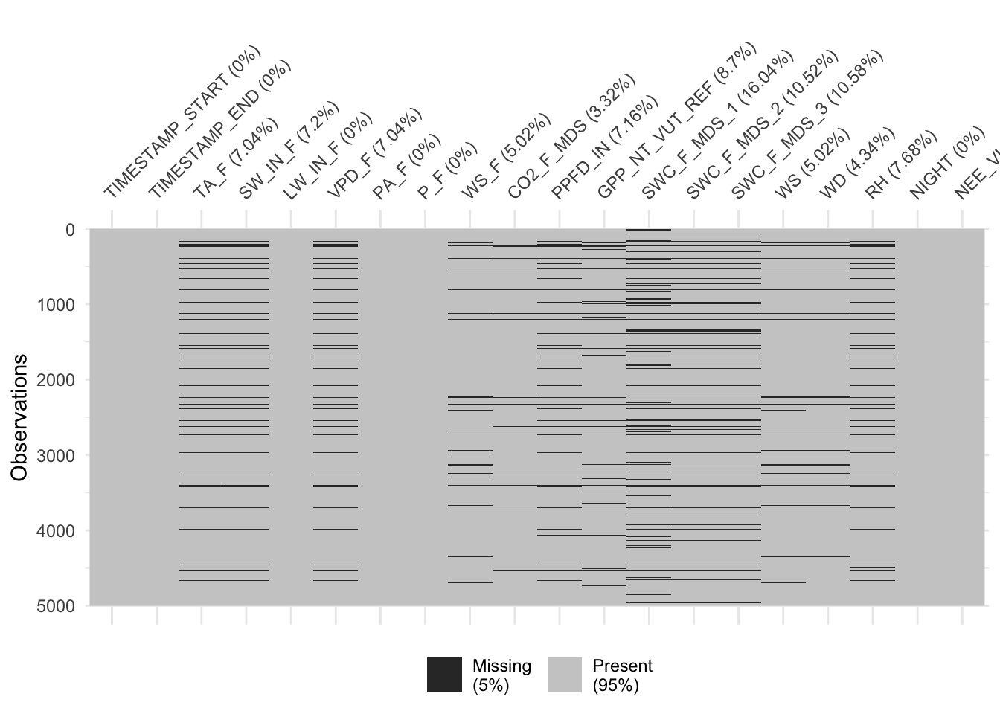
This looks reasonable now. Let’s save this as a RData file for later use.
save(hhdf, file = "./data/FLX_CH-Lae_FLUXNET2015_FULLSET_HH_2004-2014_1-3_CLEAN.RData")Checkpoint
Try writing a simple function that will calculate the sum, maximum and minimum of the vector some_numbers. (As a bonus have the result print out a sentence saying: “The sum is: x , the maximum is: y and the minimum is: z.”)
# Run this code:
some_numbers <-c(10,15, 436, 728, 1111)Solution
function_exercise <- function(x) {
sum <- sum(x)
max <- max(x)
min <- min(x)
cat("The sum is:", sum, ", the maximum is:", max, " and the minimum is:", min, ".\n")
}
function_exercise(some_numbers)## The sum is: 2300 , the maximum is: 1111 and the minimum is: 10 .3.1.1.6 Data visualisation I
Looking at data is an integral part of data processing. You have already encountered a simple x-y line plot, created with base-R, in Chapter 1. We’re working with time series data. A natural first visualisation step is therefore to plot our variables against time, for example, GPP_NT_VUT_REF versus TIMESTAMP_START:
plot(hhdf$TIMESTAMP_START, hhdf$GPP_NT_VUT_REF, type = "l")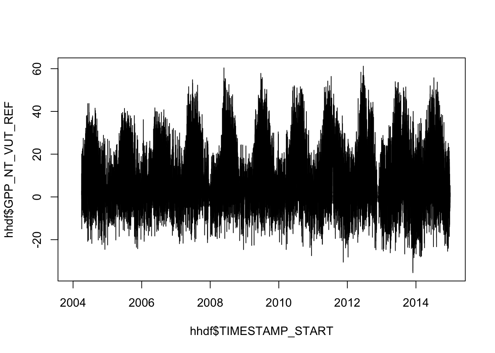
As introduced in Video 2c, ggplot2 offers a powerful and (at least after an initial brain-effort) intuitive syntax for building data visualisations in a versatile, elegant, and efficient way. It defines a complete “grammar of graphics” (thus the name ggplot), which allows you to consistently apply the same syntax for different purposes.
We create the same line plot as done above with geom_line():
library(ggplot2)
ggplot(data = hhdf, aes(x = TIMESTAMP_START, y = GPP_NT_VUT_REF)) +
geom_line()## Warning: Removed 4342 row(s) containing missing values (geom_path).
This is a dense plot and we cannot distinguish patterns because variations in GPP happen at time scales that are too narrow for displaying 14 years in one plot. Of course, GPP varies throughout a day just as much as it varies throughout a season. To see this, we can zoom into a narrower time span (and apply some plot customization at the same time for illustration):
hhdf %>%
slice(24000:25000) %>%
ggplot(aes(x = TIMESTAMP_START, y = GPP_NT_VUT_REF)) +
geom_line(color = "tomato") +
labs(title = "Gross primary productivity", subtitle = "Site: CH-Lae", x = "Time", y = expression(paste("GPP (gC m"^-2, "s"^-1, ")"))) +
theme_classic()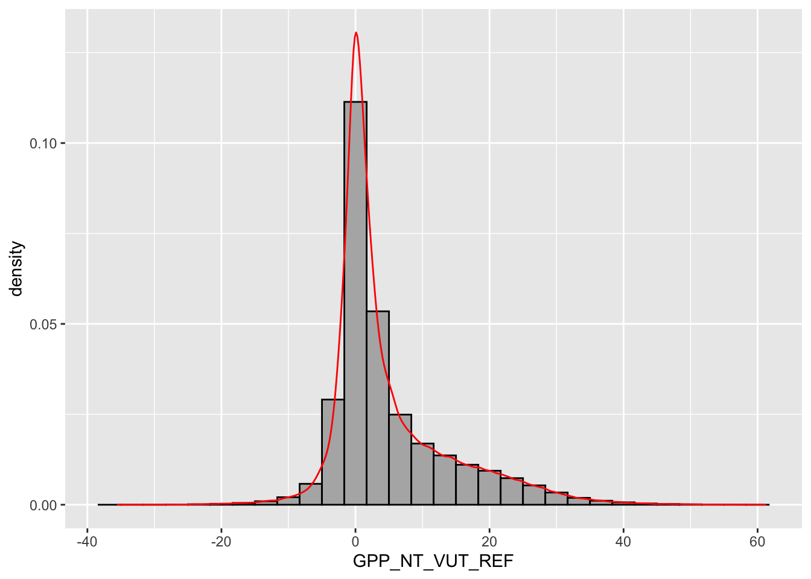
The ups and downs are happening within one day. Remember the introduction of “variations” in our data. This is an example: We have GPP variations at the sub-daily (diurnal) time scale, as well as at the seasonal time scale. This is very typical for environmental time series data. Sometimes, we even have a long-term trend on top of that. Dealing with such multiple scales of variations and “hidden dimensions” something you’ll have to deal with a lot as an “Environmental Systems Data Scientist.”
Note that above, we have first selected rows of the data frame with the dplyr function slice() and then piped its output (which is again a data frame) into ggplot() (which takes as a first argument the data frame).
The second type of visualisation that lets you quickly understand your data better and that often comes early in the exploratory data analysis phase is a histogram. It shows the count of how many points of a certain variable (here, GPP_NT_VUT_REF) fall into a discrete set of bins. When normalising (scaling) the “bars” of the histogram to unity, we get a density histogram. Histograms can be created with ggplot2 using the geom_histogram() function. In the example below, values of the variable of interest (GPP_NT_VUT_REF) are plotted along the x-axis (as is common for histograms). To specify the y-axis position of the upper end of the histogram bar as the density, use y = ..density.. in the aes() call. To show counts, use y = ..count..
hhdf %>%
ggplot(aes(x = GPP_NT_VUT_REF, y = ..density..)) +
geom_histogram(fill = "grey70", color = "black")## `stat_bin()` using `bins = 30`. Pick better value with `binwidth`.## Warning: Removed 16732 rows containing non-finite values (stat_bin).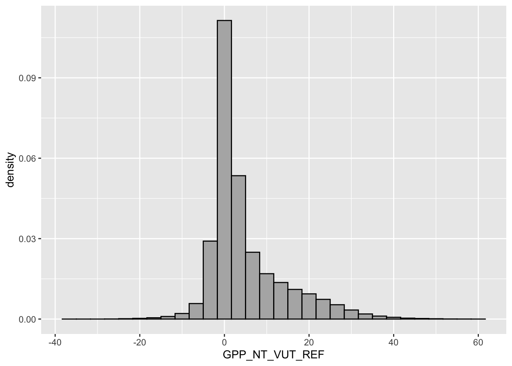
geom_density(color = "red")## geom_density: na.rm = FALSE, orientation = NA, outline.type = upper
## stat_density: na.rm = FALSE, orientation = NA
## position_identityNote that we added two visualisation layers above. First just the histogram (the dark grey bars), and second the continuous density plot as a red line. Both share the same aesthetics specification with aes(). We’ll encounter such multiple visualisation layers again below.
You can find a complete reference to ggplot here. More complete tutorials data visualization are available there or even more complete here. Below, we’ll introduce some more content on data visualisation with R and ggplot2.
3.1.1.7 Aggregating
All data frames have two dimensions, rows and columns. As you learned in Video 2a and 2c, there may be more structure to our data. Our data frame is organised along half-hourly time steps in rows. These time steps belong to different days, months, and years, although these “dimensions” are not reflected by the structure of the data frame and we don’t have columns that indicate the day, month or year of each half-hourly time step. This would actually be redundant information since the date-time objects of columns TIMESTAMP_* contain this information. The tidyverse makes it very easy to work with such “hidden dimensions” of a data frame. Let’s say we want to calculate the mean of half-hourly GPP across each data. That is, to aggregate our half-hourly data to daily data by taking a sum. You see, there are two pieces of information needed for an aggregation step: The factor (or “hidden dimension”) that groups a vector of values for collapsing it into a single value, and the function used for collapsing values. This function should take a vector as an argument and return a single value as an output. These two steps are implemented by the dplyr functions group_by() and summarise() and the nice and intuitive code that solves our problem of aggregating to daily values by summing looks like this:
ddf <- hhdf %>%
mutate(date = as_date(TIMESTAMP_START)) %>% # converts the ymd_hm-formatted date-time object to a date-only object (ymd)
group_by(date) %>%
summarise(GPP_NT_VUT_REF = mean(GPP_NT_VUT_REF, na.rm = TRUE))More info on grouped summaries, group_by() and summarise().
Using filter(), we can now easily plot daily total GPP for all days in the year 2007.
ddf %>%
filter(year(date)==2007) %>% # same functions as above can be applied to 'date'
ggplot(aes(date, GPP_NT_VUT_REF)) +
geom_line() +
geom_point() + # we can overlay multiple plot layers!
labs(title = "Gross primary productivity", subtitle = "Site: CH-Lae", x = "Time", y = expression(paste("GPP (gC m"^-2, "s"^-1, ")")))## Warning: Removed 1 rows containing missing values (geom_point).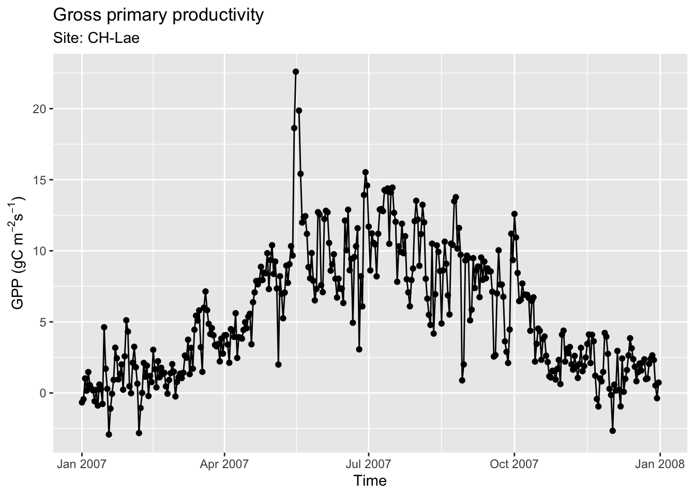
You see awkwardly high values sometime in May. What do you think could be the reason for these? Maybe they are based on poorly gap-filled data? To learn more, it is interesting to know how many of the half-hourly data points in each (aggregated) day are based on “bad” data and how many are missing (NA). To get this information, we can use again two aggregation functions group_by() and summarise(), now with multiple functions for summarising different variables.
ddf <- hhdf %>%
mutate(date = as_date(TIMESTAMP_START)) %>% # converts time object to a date object
group_by(date) %>%
summarise(GPP_NT_VUT_REF = mean(GPP_NT_VUT_REF, na.rm = TRUE),
n_datapoints = n(), # count the number of observations per day
n_measured = sum(NEE_VUT_REF_QC == 0), # count the number of actually measured data (excluding gap-filled and poor quality data)
PPFD_IN = mean(PPFD_IN, na.rm = TRUE), # we'll use this later
.groups = 'drop'
) %>%
mutate(f_measured = n_measured / n_datapoints) # calculate the fraction of measured values over total observations3.1.1.8 Data visualisation II
After completing the aggregation above, we now have a new “hidden dimension” in our data frame: Each GPP measurement is located not only along a time axis, but also along a “data quality axis,” measured by the fraction of actually measured (not gap-filled) half-hourly data points per day (f_measured). We can use this additional axis and visualise it by using colors of our points according to f_measured. In other words, we “map” f_measured to the color axis, similar to how we “mapped” time and GPP to the x and y axes before. When adding such an additional mapping to visualisation dimensions (“aesthetics”), we have to specify it using aes(). Now, this only affects the points and color of points, while the lines and points and their position in x-y space is shared. Hence, we write aes(x = date, y = GPP_NT_VUT_REF) in the ggplot() function call (indicating that all subsequent additions of geom_ layers share this x-y mapping); while aes(color = f_measured) is specified only in the geom_point() layer.
ddf %>%
filter(year(date)==2007) %>% # same functions as above can be applied to 'date'
ggplot(aes(x = date, y = GPP_NT_VUT_REF)) +
geom_line() +
geom_point(aes(color = f_measured)) + # we can overlay multiple plot layers!
labs(title = "Gross primary productivity", subtitle = "Site: CH-Lae", x = "Time", y = expression(paste("GPP (gC m"^-2, "s"^-1, ")"))) +
scale_color_viridis_c(direction = -1) # "viridis" continuous color scale in inverse direction## Warning: Removed 1 rows containing missing values (geom_point).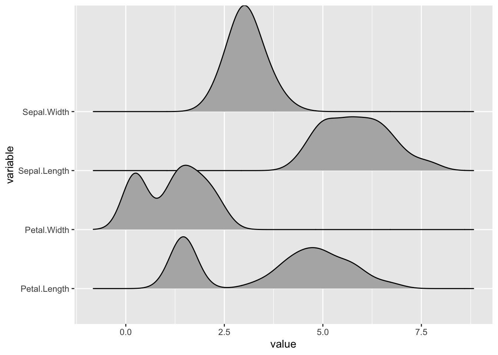
This is interesting. Apparently, the points with particularly low GPP during summer months are predominantly based on gap-filled half-hourly data. This is an insight we would never have gotten by just looking at the naked values in our data frames. Data visualisations are essential for guiding analyses and processing throughout all steps. It’s an iterative process. Having learned this, we now have a justification for applying further data filtering criteria.
Let’s recall our research question that motivates our exploratory data analysis here. We want to know not only about variations in GPP, but also its controls. That is, what are the environmental factors that determine the variations in GPP. In other words, what are the covariates of GPP? In a machine learning context, you may also call them “predictors” or “features.” To answer this question, we’ll have to turn to modelling. Here, we refer to modelling in the wider sense of predicting observed variations in a target variable based on empirical relationships with a set of predictors. We leave the real modelling and machine learning for later chapters. But not fully. Most often, you’ll start delving into your research question with some a priori understanding of the system from which you have observational data. Such an understanding may be informed by previous observations and their interpretations, or by theory.
Here, we want to understand what controls GPP. We’re not the first ones to ask this question and powerful theory is available to understand and predict variations of GPP. You have probably learned that photosynthesis requires sunlight in middle school already and it shouldn’t come as a surprise that the more sunlight there is, say in a day, the higher the GPP. After all, such a presumed positive (maybe even monotonically increasing) relationship is also consistent with the apparent agreement between the scales of variation in GPP and the scales of variation in incoming solar radiation (dark night, bright day; dark winter, bright summer). In our dataset, PPFD_IN is the incoming photosynthetic photon flux density, measured in mol photons (that come in the right wavelength to be used for photosynthesis). So how does its relationship with GPP look like (using daily data)?
ddf %>%
ggplot(aes(x = PPFD_IN, y = GPP_NT_VUT_REF)) +
geom_point() +
labs(x = expression(paste("PPFD (", mu, "mol m"^-2, "s"^-1, ")")), y = expression(paste("GPP (gC m"^-2, "s"^-1, ")")) ) +
ylim(-10, 25)## Warning: Removed 287 rows containing missing values (geom_point).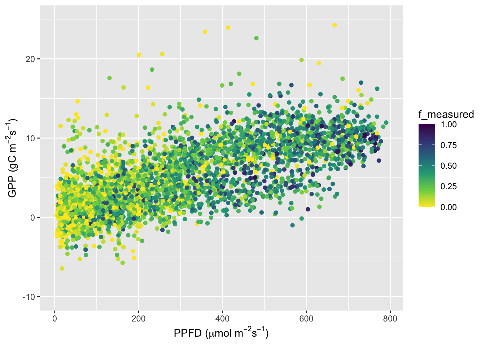
Indeed, there is a clear trend of increasing GPP with increasing PPFD, and it looks largely linear. As in all data collected in the field, there is a substantial amount of scatter. Does the data quality “dimension” explain some of this scatter? To inspect our data for answering this question, let’s “map” the data quality dimension onto the color aesthetic as before.
ddf %>%
ggplot(aes(x = PPFD_IN, y = GPP_NT_VUT_REF, color = f_measured)) +
geom_point() +
scale_color_viridis_c(direction = -1) +
labs(x = expression(paste("PPFD (", mu, "mol m"^-2, "s"^-1, ")")), y = expression(paste("GPP (gC m"^-2, "s"^-1, ")")) ) +
ylim(-10, 25)## Warning: Removed 287 rows containing missing values (geom_point).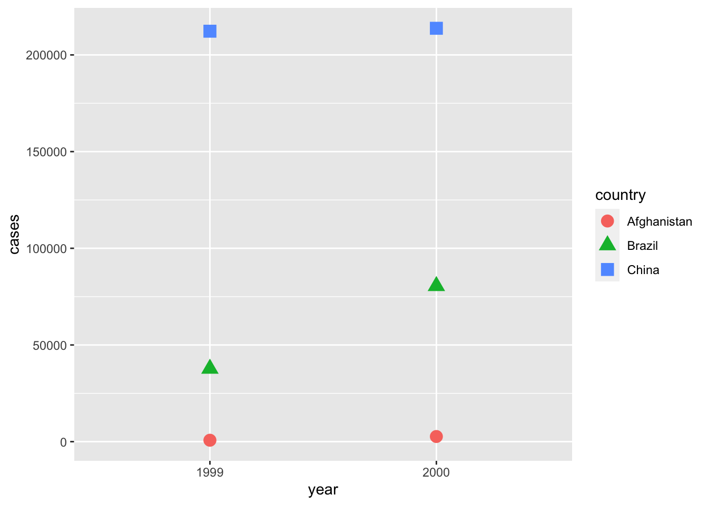
The high values of GPP we already found to be associated with low fractions of underlying measured data in the time series plot is not explained by simultaneously high PPFD. There are a bunch of yellow points that appear like outliers of the linear relationship.
Talking about linear relationships: What is the straight line that “best fits” through our points here? Now, we’re getting into modelling using a univariate linear regression. But we’re not getting too far into it now since it will be revisited in more detail in later chapters.
Anyway, it’s quite intuitive and you probably have encountered how to fit a linear regression model in R before. Here, we would do:
linmod <- lm(GPP_NT_VUT_REF ~ PPFD_IN, data = ddf)We can also directly plot the fitted linear regression line over the scatter plot using geom_smooth(method = "lm").
ddf %>%
ggplot(aes(x = PPFD_IN, y = GPP_NT_VUT_REF)) +
geom_point() +
geom_smooth(method = "lm", color = "red") +
ylim(-10, 25) +
labs(x = expression(paste("PPFD (", mu, "mol m"^-2, "s"^-1, ")")), y = expression(paste("GPP (gC m"^-2, "s"^-1, ")")) ) ## `geom_smooth()` using formula 'y ~ x'## Warning: Removed 287 rows containing non-finite values (stat_smooth).## Warning: Removed 287 rows containing missing values (geom_point).
Based on our finding that the data quality appears to affect GPP values and their relationship with PPFD, we can fit separate linear regression models for data where f_measured is greater than 0.5 or not. For this, we can create a new variable with mutate(more_measured = as.factor(f_measured > 0.5))). This binary information is yet another “hidden dimension” in our data. And because it’s a categorical variable and not a continuous one, it is treated in R as a factor. We can map this new variable more_measured onto the color aesthetic as we did before. Since we specify this aesthetic below in the ggplot() function call, all subsequent visualisation layers will respect it, also geom_smooth().
ddf %>%
mutate(more_measured = as.factor(f_measured > 0.5)) %>%
ggplot(aes(x = PPFD_IN, y = GPP_NT_VUT_REF, color = more_measured)) +
geom_point(alpha = 0.2) + # set opacity to 20% to avoid underscernible overplotting
geom_smooth(method = "lm") +
labs(x = expression(paste("PPFD (", mu, "mol m"^-2, "s"^-1, ")")), y = expression(paste("GPP (gC m"^-2, "s"^-1, ")")) ) +
ylim(-10, 25)## `geom_smooth()` using formula 'y ~ x'## Warning: Removed 287 rows containing non-finite values (stat_smooth).## Warning: Removed 287 rows containing missing values (geom_point).
There is indeed a slight difference in the slope. Note also that in the above ggplot() call, we specified the aesthetics aes(x = PPFD_IN, y = GPP_NT_VUT_REF, color = more_measured). This triggers all subsequen additions of visualisation layers (here: geom_piont() and geom_smooth) to use the same aesthetics mapping. That is, the distinction by the same colors is applied both to the points and to the smoothing lines.
The point plots suffer from the fact that many points, particularly in the low PPFD range, are plotted on top of each other. This may hide some information. To unravel it, we may want to visualise the density of points. In other words, we want to plot how many points fall within bins of GPP and PPFD, or grid cells in the GPP-PPFD-space. We can create such a raster plot that measures the density using stat_density_2d():
ddf %>%
ggplot(aes(x = PPFD_IN, y = GPP_NT_VUT_REF)) +
stat_density_2d(
geom = "raster", #the geometric object to display the data (in this case: rectangles)
aes(fill = after_stat(density)), #using `density`, a variable calculated by the stat
contour = FALSE
) +
scale_fill_viridis_c() +
ylim(-5, 15) +
labs(x = expression(paste("PPFD (", mu, "mol m"^-2, "s"^-1, ")")), y = expression(paste("GPP (gC m"^-2, "s"^-1, ")")) ) ## Warning: Removed 324 rows containing non-finite values (stat_density2d).## Warning: Removed 200 rows containing missing values (geom_raster).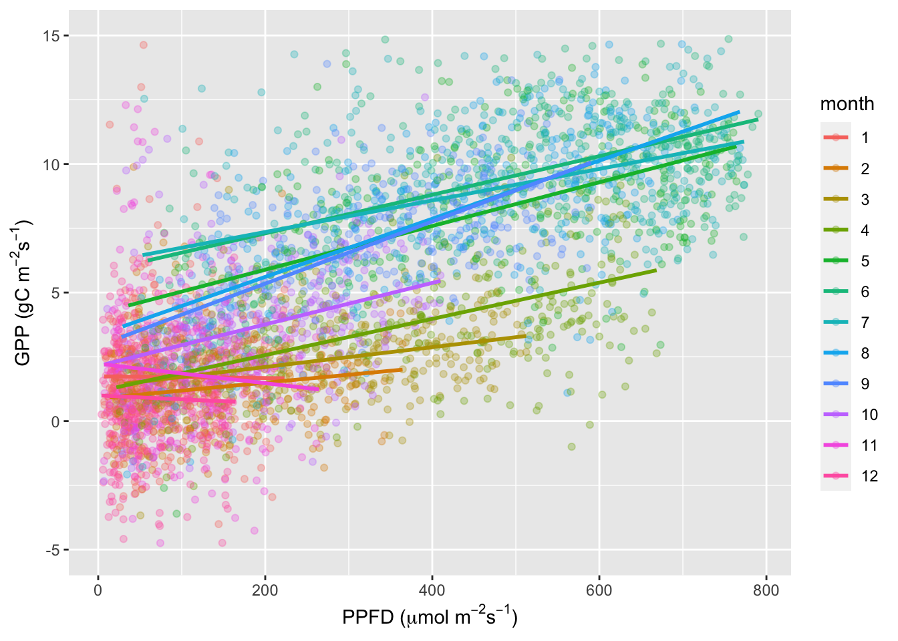
There seems to be an interesting “separation” of points. In some cases, the increase in GPP with increasing PPFD is steeper than in others. But what determines these “cases?” Again, we can use our a priori understanding of the system to formulate hypotheses and test them by finding the appropriate visualisation type. Here, one hypothesis could be that the slope is steeper in some months than in others. This is actually more than just a vague guess. Can you imagine why?
Let’s visually test this hypothesis and fit separate linear regression models for each month. Note that each month encompasses data from multiple years. Hence, this works only if there is a commonality between the same months of different years. Let’s see…
ddf %>%
mutate(month = as.factor(month(date))) %>%
ggplot(aes(x = PPFD_IN, y = GPP_NT_VUT_REF, color = month)) +
geom_point(alpha = 0.3) +
geom_smooth(method = "lm", se = FALSE) +
ylim(-5, 15) +
labs(x = expression(paste("PPFD (", mu, "mol m"^-2, "s"^-1, ")")), y = expression(paste("GPP (gC m"^-2, "s"^-1, ")")) ) ## `geom_smooth()` using formula 'y ~ x'## Warning: Removed 324 rows containing non-finite values (stat_smooth).## Warning: Removed 324 rows containing missing values (geom_point).
Eureka! The relationships, indeed, separate quite a bit between months. In spring months (3 = March, 4 = April), light levels can be already quite high, but GPP remains much lower than in summer months. Why is this?
3.1.2 Dataset 2 (daily flux data)
The daily data is given for a set of eddy covariance measurement sites. Data for each site is given in a separate file. When dealing with such a setup, we will likely encounter situations where we have to apply the same sequence of data wrangling steps (or functions) to multiple instances of the same object class. For example, we will have to apply the same data cleaning steps or fitting a regression model to each site’s data. In this example, the object class is a data frame, and the “multiple instances” are the data frames for each site. This is the territory of functional programming…
Of course, we can also combine each site’s data frame into a single large one, e.g., by “stacking” them along the time dimension (rows). In this case, we create a new “hidden dimension” - the site identity. In this subsection, you will learn how to keep an overview and code efficiently while dealing with such large data frames - always using the tidyverse in R.
3.1.2.1 Functional programming I
The purrr package of tidyverse offers the functionalities for functional programming. It makes use of lists and applies (or “maps”) a function to each element of the list. Let’s start by creating a list of paths that point to the files with daily data. They are all located in the directory "./data_DD" and share a certain string of characters in their file names "_FLUXNET2015_FULLSET_DD_".
vec_files <- list.files("./data", pattern = "_FLUXNET2015_FULLSET_DD_", full.names = TRUE)
print(vec_files[1:5])## [1] "./data/FLX_BE-Bra_FLUXNET2015_FULLSET_DD_1996-2014_2-3.csv"
## [2] "./data/FLX_BE-Lon_FLUXNET2015_FULLSET_DD_2004-2014_1-3.csv"
## [3] "./data/FLX_BE-Vie_FLUXNET2015_FULLSET_DD_1996-2014_1-3.csv"
## [4] "./data/FLX_CH-Cha_FLUXNET2015_FULLSET_DD_2005-2014_2-3.csv"
## [5] "./data/FLX_CH-Dav_FLUXNET2015_FULLSET_DD_1997-2014_1-3.csv"vec_files is now a vector of 35 files for 35 sites. In simple base-R, we could read them in at once using a simple for loop. The following creates a list of data frames that are generated by read_csv() with the argument ifil iteratively changing, taking values of elements in vec_files.
list_df <- list()
for (ifil in vec_files){
list_df[[ifil]] <- read.csv(ifil)
}In the tidyverse, the above loop can be written on one line, using the function map() from the purrr package, as:
list_df <- purrr::map(as.list(vec_files), ~read_csv(.))Note that map() maps the function read_csv() to elements of a list. That’s why we have to convert the vector vec_files to a list, first. The list is always the first argument. You further note two new symbols (~ and .). The ~ always goes before the function that is mapped to elements of the list. The . indicates where the elements of the list would go if spelled out explicitly (e.g., read_csv(.) will be read_csv("./data_DD/FLX_BE-Bra_FLUXNET2015_FULLSET_DD_1996-2014_2-3.csv") for the first iteration). The output of map() is again a list. map() comes in multiple flavours. A complete reference for all purrr functions is available here. A useful and more extensive tutorial on purrr is available here.
To be fair, the above map() call doesn’t return a named list as our for loop created. But we can give each element of the returned list of data frames different names by:
names(list_df) <- vec_files # this makes it a named listLet’s apply a similar cleaning function as we did before for half-hourly data. Unfortunately, we cannot reuse the same code because not all variables that are given in the half-hourly data are available also in the daily data and because the quality control flag is defined differently. We can define the daily data cleaning function:
## function definition
clean_fluxnet_dd <- function(df){
df %>%
## select only the variables we're interested in
select(starts_with("TIMESTAMP"),
ends_with("_F"),
CO2_F_MDS,
PPFD_IN,
GPP_NT_VUT_REF,
NEE_VUT_REF_QC,
USTAR,
ends_with("QC"),
-contains("JSB")
) %>%
## convert to a nice date object
mutate(TIMESTAMP = lubridate::ymd(TIMESTAMP)) %>%
## not setting heavily gapfilled data to zero
## set all -9999 to NA
na_if(-9999) %>%
## drop QC variables (no longer needed), except NEE_VUT_REF_QC
select(-ends_with("_QC"), NEE_VUT_REF_QC)
}… and apply it to each site’s data frame as follows:
list_df <- purrr::map(list_df, ~clean_fluxnet_dd(.))Sometimes, it may be impractical to have different data frames as elements of a list. In fact, the data frames read in here all have similar shapes. I.e., they share the same columns (but differ by their number of rows, and of course, by their data values). This suggests that we can “stack” each data frame along its rows. This can be done using bind_rows() and we can automatically create a new column "siteid" in the stacked data frame that takes the name of the corresponding list element.
ddf_allsites <- bind_rows(list_df, .id = "siteid")
head(ddf_allsites)## # A tibble: 6 x 14
## siteid TIMESTAMP TA_F SW_IN_F LW_IN_F VPD_F PA_F P_F WS_F CO2_F_MDS
## <chr> <date> <dbl> <dbl> <dbl> <dbl> <dbl> <dbl> <dbl> <dbl>
## 1 ./dat… 1996-01-01 2.85 11.9 327. 0.262 100. 0.882 1.64 NA
## 2 ./dat… 1996-01-02 0.716 29.6 290. 0.273 101. 0.093 1.28 NA
## 3 ./dat… 1996-01-03 1.01 15.0 318. 0.272 102. 0.41 1.23 NA
## 4 ./dat… 1996-01-04 1.59 22.4 299. 0.624 102. 0.113 3.47 NA
## 5 ./dat… 1996-01-05 2.02 31.5 276. 1.90 100. 0.359 3.25 NA
## 6 ./dat… 1996-01-06 1.61 10.5 308. 1.36 99.7 0.478 3.38 NA
## # … with 4 more variables: PPFD_IN <dbl>, GPP_NT_VUT_REF <dbl>, USTAR <dbl>,
## # NEE_VUT_REF_QC <dbl>This creates one single large data frame containing all sites’ data (>167’000 rows) and adds a column named "siteid" that is automatically created by using the names of the list elements of list_df.
As above for the half-hourly data, let’s check the fraction of missing data for each variable.
ddf_allsites %>%
summarise_all(funs(100*sum(is.na(.))/length(.))) %>%
t()## [,1]
## siteid 0.000000
## TIMESTAMP 0.000000
## TA_F 0.000000
## SW_IN_F 0.000000
## LW_IN_F 0.000000
## VPD_F 0.000000
## PA_F 0.000000
## P_F 0.000000
## WS_F 0.000000
## CO2_F_MDS 2.710296
## PPFD_IN 22.947253
## GPP_NT_VUT_REF 2.400650
## USTAR 21.993209
## NEE_VUT_REF_QC 1.527306… and visualise data gaps for one site to check whether our filtering criteria are not too strong.
vis_miss(
ddf_allsites,
cluster = FALSE,
warn_large_data = FALSE
)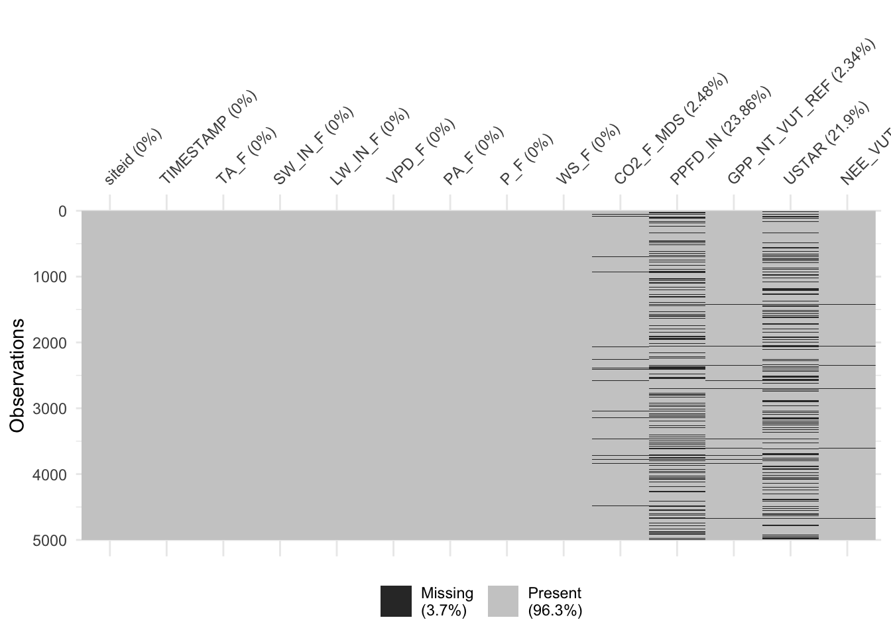
We see that, unfortunately, PPFD_IN is often missing.
3.1.2.2 Strings
Unfortunately, the column siteid now contains strings specifying the full paths of the files that were read. We would like to extract the site name from these strings. But fortunately, the file names follow a clear pattern (Side remark: naming your files wisely can often make your life simpler.).
ddf_allsites$siteid %>% head()## [1] "./data/FLX_BE-Bra_FLUXNET2015_FULLSET_DD_1996-2014_2-3.csv"
## [2] "./data/FLX_BE-Bra_FLUXNET2015_FULLSET_DD_1996-2014_2-3.csv"
## [3] "./data/FLX_BE-Bra_FLUXNET2015_FULLSET_DD_1996-2014_2-3.csv"
## [4] "./data/FLX_BE-Bra_FLUXNET2015_FULLSET_DD_1996-2014_2-3.csv"
## [5] "./data/FLX_BE-Bra_FLUXNET2015_FULLSET_DD_1996-2014_2-3.csv"
## [6] "./data/FLX_BE-Bra_FLUXNET2015_FULLSET_DD_1996-2014_2-3.csv"The paths each start with the subdirectory where they are located ("./data_DD/"), then "FLX_", and then the site name (the first three entries of the table containing data from all sites are for the site "BE-Bra"), and then some more specifications, including the years that respective files’ data cover. What’s the most effective way to extract the site name from all these strings? The stringr package offers a set of very handy tools to work with strings, see this cheat sheet for a summary of them. Here, we would like to extract the six characters, starting at position 15.
vec_sites <- str_sub(vec_files, start = 34, end = 39)
head(vec_sites)## [1] "LSET_D" "LSET_D" "LSET_D" "LSET_D" "LSET_D" "LSET_D"… and overwrite the values of column "siteid" with just these six characters.
ddf_allsites <- ddf_allsites %>%
mutate(siteid = str_sub(siteid, start = 34, end = 39))
head(ddf_allsites)## # A tibble: 6 x 14
## siteid TIMESTAMP TA_F SW_IN_F LW_IN_F VPD_F PA_F P_F WS_F CO2_F_MDS
## <chr> <date> <dbl> <dbl> <dbl> <dbl> <dbl> <dbl> <dbl> <dbl>
## 1 LSET_D 1996-01-01 2.85 11.9 327. 0.262 100. 0.882 1.64 NA
## 2 LSET_D 1996-01-02 0.716 29.6 290. 0.273 101. 0.093 1.28 NA
## 3 LSET_D 1996-01-03 1.01 15.0 318. 0.272 102. 0.41 1.23 NA
## 4 LSET_D 1996-01-04 1.59 22.4 299. 0.624 102. 0.113 3.47 NA
## 5 LSET_D 1996-01-05 2.02 31.5 276. 1.90 100. 0.359 3.25 NA
## 6 LSET_D 1996-01-06 1.61 10.5 308. 1.36 99.7 0.478 3.38 NA
## # … with 4 more variables: PPFD_IN <dbl>, GPP_NT_VUT_REF <dbl>, USTAR <dbl>,
## # NEE_VUT_REF_QC <dbl>Checkpoint
Create a string with your home address. Replace “Umlaute -äöu” and remove the house number. Tip: use the stringr package function str_replace().
### Solution
address <- "Mr. Miyagi, Universitätsstrasse 16, 8006 Zürich"
address <- str_replace(address,'ü', 'ue')
address <- str_replace(address,'ä', 'ae')
address <- str_replace(address, "16", "")
print(address)## [1] "Mr. Miyagi, Universitaetsstrasse , 8006 Zuerich"3.1.2.3 Combining relational data
It’s common that we want to combine information from multiple data frames into a single one. In our case, we are interested in knowing more about the sites for which we have time series data. We are interested in meta-information about the sites, for example, the vegetation type, geographical location, elevation, etc. In such cases, where information about common set of units (here sites) is distributed across multiple data objects, we’re speaking of relational data. Of course, there has to be a link between them. In our case, this is the site identity or site name. Specifically, this means that the same labeling of site identities has to be available from all relational data objects.
You may ask yourself what’s the purpose of keeping data in separate relational data objects. Of course, we’d have to duplicate each value of site elevation, for example, when adding this info as a new column to a time series data frame of the respective site. This would inflate the memory of the object considerably without actually adding information. Therefore it can make sense to keep such differently structured data objects separate and combine them only during the analysis step.
A comprehensive collection of FLUXNET site meta information is freely available from Falge et al.. Let’s read this file ("fluxnet_site_info_all.csv") from the sub-directory "data_DD/".
df_sites <- read_csv("./data/fluxnet_site_info_all.csv")##
## ── Column specification ────────────────────────────────────────────────────────
## cols(
## .default = col_character(),
## siteid = col_double(),
## latitude = col_double(),
## longitude = col_double()
## )
## ℹ Use `spec()` for the full column specifications.head(df_sites)## # A tibble: 6 x 21
## siteid fluxnetid keyid sitename countryid land_unit status latitude longitude
## <dbl> <chr> <chr> <chr> <chr> <chr> <chr> <dbl> <dbl>
## 1 9 AR-Lac ar.l… La Cigu… Argentina South Am… Active -29.3 -61.0
## 2 12 AT-Lan at.l… Langenf… Austria Europe Inact… 47.1 11.0
## 3 13 AT-Leu at.l… Leutasch Austria Europe Inact… 47.4 11.2
## 4 14 AT-Neu at.n… Neustif… Austria Europe Active 47.1 11.3
## 5 15 AT-Sch at.s… Schlitt… Austria Europe Inact… 47.4 11.2
## 6 17 AU-Cas au.c… Burdeki… Australia Australi… Active -19.6 147.
## # … with 12 more variables: year_began <chr>, network1 <chr>, network2 <chr>,
## # network3 <chr>, koeppen_climate <chr>, gtopo30_elevation <chr>,
## # igbp_land_use <chr>, umd_land_cover <chr>, lai_fpar <chr>,
## # npp_land_cover <chr>, plant_functional_type <chr>, network1_id <chr>The file contains info for many more sites (844 rows for 844 sites) than we have data for (35 sites). The key variable that combines the two is the standard site ID name that is commonly used for FLUXNET sites. In the sites table (df_sites), the key is called fluxnetid. In the temporal dataset ddf_allsites, the site key column is called siteid. To combine (“join”) the two data frames, the joining “key” ID has to be named the same way (here "siteid") and should of course contain the same set of different values (site names in our case). Hence, we have to rename the respective column in one of our data frames. Then, we’re ready to join.
df_sites <- df_sites %>%
select(-siteid) # remove this variable first because it doesn't contain the name we want
ddf_allsites_joined <- df_sites %>%
rename(siteid = fluxnetid) %>%
right_join(ddf_allsites,
by = "siteid") %>%
## perform some variable renaming for our own taste
rename(lon = longitude,
lat = latitude,
elv = gtopo30_elevation
)Let’s check the number of columns in the two data frames provided as arguments and in the resulting data frame.
ncol(df_sites) + ncol(ddf_allsites) - 1## [1] 33ncol(ddf_allsites_joined)## [1] 33head(ddf_allsites_joined)## # A tibble: 6 x 33
## siteid keyid sitename countryid land_unit status lat lon year_began
## <chr> <chr> <chr> <chr> <chr> <chr> <dbl> <dbl> <chr>
## 1 LSET_D <NA> <NA> <NA> <NA> <NA> NA NA <NA>
## 2 LSET_D <NA> <NA> <NA> <NA> <NA> NA NA <NA>
## 3 LSET_D <NA> <NA> <NA> <NA> <NA> NA NA <NA>
## 4 LSET_D <NA> <NA> <NA> <NA> <NA> NA NA <NA>
## 5 LSET_D <NA> <NA> <NA> <NA> <NA> NA NA <NA>
## 6 LSET_D <NA> <NA> <NA> <NA> <NA> NA NA <NA>
## # … with 24 more variables: network1 <chr>, network2 <chr>, network3 <chr>,
## # koeppen_climate <chr>, elv <chr>, igbp_land_use <chr>,
## # umd_land_cover <chr>, lai_fpar <chr>, npp_land_cover <chr>,
## # plant_functional_type <chr>, network1_id <chr>, TIMESTAMP <date>,
## # TA_F <dbl>, SW_IN_F <dbl>, LW_IN_F <dbl>, VPD_F <dbl>, PA_F <dbl>,
## # P_F <dbl>, WS_F <dbl>, CO2_F_MDS <dbl>, PPFD_IN <dbl>,
## # GPP_NT_VUT_REF <dbl>, USTAR <dbl>, NEE_VUT_REF_QC <dbl>head(ddf_allsites)## # A tibble: 6 x 14
## siteid TIMESTAMP TA_F SW_IN_F LW_IN_F VPD_F PA_F P_F WS_F CO2_F_MDS
## <chr> <date> <dbl> <dbl> <dbl> <dbl> <dbl> <dbl> <dbl> <dbl>
## 1 LSET_D 1996-01-01 2.85 11.9 327. 0.262 100. 0.882 1.64 NA
## 2 LSET_D 1996-01-02 0.716 29.6 290. 0.273 101. 0.093 1.28 NA
## 3 LSET_D 1996-01-03 1.01 15.0 318. 0.272 102. 0.41 1.23 NA
## 4 LSET_D 1996-01-04 1.59 22.4 299. 0.624 102. 0.113 3.47 NA
## 5 LSET_D 1996-01-05 2.02 31.5 276. 1.90 100. 0.359 3.25 NA
## 6 LSET_D 1996-01-06 1.61 10.5 308. 1.36 99.7 0.478 3.38 NA
## # … with 4 more variables: PPFD_IN <dbl>, GPP_NT_VUT_REF <dbl>, USTAR <dbl>,
## # NEE_VUT_REF_QC <dbl>Here, we’ve done a right_join(). This can be understood as joining the data frame given by the first argument to right_join() (here, what’s being piped from the left side of the pipe) onto the data frame given by the second argument (ddf_allsites). The output of right_join() has the same number or rows as the data frame on the “right” (the second argument) and is, as for all tidyverse functions, a data frame. There is also a left_join() that creates a new data frame with the number of rows corresponding to the data frame on the “left” (the first argument). You can find more on relational data and joining data frames, e.g., here, or here.
Everything below this box is Bonus Material
3.1.2.4 Functional programming II
Functions can be applied to any list. Because lists can consist of any type of objects, map() is a powerful approach to “iterating” over multiple instances of the same object and can be used for all sorts of tasks. In the following, list elements are data frames of daily data and the mapping function lm() fits a linear regression model of GPP versus PPFD to each sites’ data.
list_linmod <- purrr::map(list_df, ~lm(GPP_NT_VUT_REF ~ PPFD_IN, data = .))Note how the . now indicates where the elements of list_df go when evaluating the lm() function. This now returns a list of linear model objects (the type of objects returned by the lm() function call).
We can spin the functional programming concept further and apply (or map) the summary() function to the lm-model objects to get a list of useful statistics and metrics, and then further extract the element r.squared" from that list as:
list_linmod %>%
purrr::map(summary) %>% # applyting a function
purrr::map_dbl("r.squared") %>% # extracting from a named list
head() # for handy output## ./data/FLX_BE-Bra_FLUXNET2015_FULLSET_DD_1996-2014_2-3.csv
## 0.7732644
## ./data/FLX_BE-Lon_FLUXNET2015_FULLSET_DD_2004-2014_1-3.csv
## 0.3674492
## ./data/FLX_BE-Vie_FLUXNET2015_FULLSET_DD_1996-2014_1-3.csv
## 0.7279673
## ./data/FLX_CH-Cha_FLUXNET2015_FULLSET_DD_2005-2014_2-3.csv
## 0.5340263
## ./data/FLX_CH-Dav_FLUXNET2015_FULLSET_DD_1997-2014_1-3.csv
## 0.3777200
## ./data/FLX_CH-Fru_FLUXNET2015_FULLSET_DD_2005-2014_2-3.csv
## 0.6067123map_dbl() is a variant of the map() function that returns not a list, but a vector of numeric values of class “double” (hence, the name _dbl). Note further, that providing a character ("r.squared") as an argument instead of an (unquoted) function name, map() extracts the correspondingly named list element, instead of applying a function to a list element.
When writing code for an analysis, it’s useful, if not essential, to understand the objects we’re working with and make sense of the results of simple print <object> statements. Data frames are particularly handy as they provide an organisation of data that is particularly intuitive (variables along columns, observations along rows, values in cells). We’ve encountered such data frames above. Here, we’re dealing with a list of linear model objects. Can such a list fit into the tidy paradigm?
Yes, they can. Think of the linear model objects as ‘values.’ Values don’t necessarily have to be scalars, but they can be of any type (class).
tibble(
siteid = vec_sites,
linmod = list_linmod
)## # A tibble: 35 x 2
## siteid linmod
## <chr> <named list>
## 1 LSET_D <lm>
## 2 LSET_D <lm>
## 3 LSET_D <lm>
## 4 LSET_D <lm>
## 5 LSET_D <lm>
## 6 LSET_D <lm>
## 7 LSET_D <lm>
## 8 LSET_D <lm>
## 9 LSET_D <lm>
## 10 LSET_D <lm>
## # … with 25 more rowsThe fact that cells can contain any type of object offers a powerful concept. Instead of a linear model object as in the example above, each cell may also contain another data frame. In such a case, we say that the data frame is no longer flat, but nested.
The following creates a nested data frame, where the column data is defined by the list of data frames read from files above (list_df).
tibble(
siteid = vec_sites,
data = list_df
)## # A tibble: 35 x 2
## siteid data
## <chr> <named list>
## 1 LSET_D <tibble [6,940 × 13]>
## 2 LSET_D <tibble [4,018 × 13]>
## 3 LSET_D <tibble [6,940 × 13]>
## 4 LSET_D <tibble [3,652 × 13]>
## 5 LSET_D <tibble [6,574 × 13]>
## 6 LSET_D <tibble [3,652 × 13]>
## 7 LSET_D <tibble [4,018 × 13]>
## 8 LSET_D <tibble [2,557 × 13]>
## 9 LSET_D <tibble [4,018 × 13]>
## 10 LSET_D <tibble [3,287 × 13]>
## # … with 25 more rowsWe can achieve the same result, by directly nesting the flat data frame holding all sites’ data (ddf_allsites). This is done by combining the group_by(), which we have encountered above when aggregating using summarise(), with the function nest() from the tidyr package.
library(tidyr)
ddf_allsites %>%
group_by(siteid) %>%
nest()## # A tibble: 1 x 2
## # Groups: siteid [1]
## siteid data
## <chr> <list>
## 1 LSET_D <tibble [167,288 × 13]>The function nest() names the nested data column automatically "data".
This structure is very useful. For example for applying functions over sites’ data frames separately (and not over the entire data frame). By combining map() and mutate(), we can fit linear models on each site’s data frame individually in one go.
ddf_allsites %>%
group_by(siteid) %>%
nest() %>%
mutate(linmod = map(data, ~lm(GPP_NT_VUT_REF ~ PPFD_IN, data = .)))This is approach is extremely powerful and lets you stick to handy and tidy data frames and use the rows-dimension flexibly. Here, rows are sites and no longer time steps, while the nested data frames in column "data" has time steps along their rows.
And just because it’s fun, this can be spun further, with the same steps as done above, to:
ddf_allsites_nested <- ddf_allsites %>%
group_by(siteid) %>%
nest() %>%
mutate(linmod = purrr::map(data, ~lm(GPP_NT_VUT_REF ~ PPFD_IN, data = .))) %>%
mutate(summ = purrr::map(linmod, ~summary(.))) %>%
mutate(rsq = purrr::map_dbl(summ, "r.squared")) %>%
arrange(desc(rsq)) ## to arrange output, with highest r-squared on topAmazing! In these few lines we have separated a huge flat data frame containing all sites’ data, fitted a linear regression model to each site’s data separately, extracted summary statistics (a list), and the R2 (the coefficient of determination) for each of them, and finally rearranged rows in descending order by R\(^2\). And the output is a handy and nicely looking data frame with nested columns:
ddf_allsites_nested %>% head()## # A tibble: 1 x 5
## # Groups: siteid [1]
## siteid data linmod summ rsq
## <chr> <list> <list> <list> <dbl>
## 1 LSET_D <tibble [167,288 × 13]> <lm> <smmry.lm> 0.415Nesting is useful also for avoiding value duplication when joining relational data objects. Above, we nested time series data objects (where time steps and sites are both organised along rows) by sites and got a data frame where only sites are organised along rows, while time steps are nested inside the column "data". This now fits the structure of a relational data object containing site-specific meta information (also with only sites along rows). (Of course, there is just one elevation value for each site - site elevation doesn’t change over time.). Joining the nested data frame with site meta information results in a substantially smaller and much handier data frame than joining the flat long data frame with site meta information as we did in Section Combining relational data.
ddf_allsites_nested_joined <- df_sites %>%
rename(siteid = fluxnetid) %>%
right_join(ddf_allsites_nested,
by = "siteid") %>%
## perform some variable renaming for our own taste
rename(lon = longitude,
lat = latitude,
elv = gtopo30_elevation
)
print("Flat long and joined:"); object.size(ddf_allsites_joined) %>% print(units = "auto", standard = "SI")## [1] "Flat long and joined:"## 44.2 MBprint("Nested and joined:"); object.size(ddf_allsites_nested_joined %>% select(-linmod, -summ, -rsq)) %>% print(units = "auto", standard = "SI") # removing added columns that are not in the flat long df## [1] "Nested and joined:"## 17.4 MB3.1.2.5 Advanced data visualisation
Let’s dive a bit further into visualisation. We’ve encountered how to map different dimensions of our data not only onto x and y axes in a cartesian coordinate system, but also along other “aesthetics.” We mapped it to color, but there are also other aesthetics available for such mapping in ggplot2, in particular for categorical variables (e.g., line type, point type). Yet another “mapping” is available with facet_wrap(). It separates the visualisation into different sub-plots, each showing a part of the data. It’s not dealt the same way as other aesthetics (not with specifying it with aes()), but with adding the facet_wrap() with a + to the ggplot() object.
Remember that our data frame ddf_allsites has the time series data nested for each site in the column data. ggplot doesn’t like that. Therefore, we can simply unnest() the respective column and get a long flat data frame again. Let’s plot GPP versus PPFD in separate subplots for each site. The factor (column name) by which facet_wrap() separates the plot has to be specified as an argument with a preceeding ~. Here, this is ~siteid.
ddf_allsites_joined %>%
ggplot(aes(x = PPFD_IN, y = GPP_NT_VUT_REF)) +
geom_point(alpha = 0.1) +
facet_wrap(~siteid)## Warning: Removed 38583 rows containing missing values (geom_point).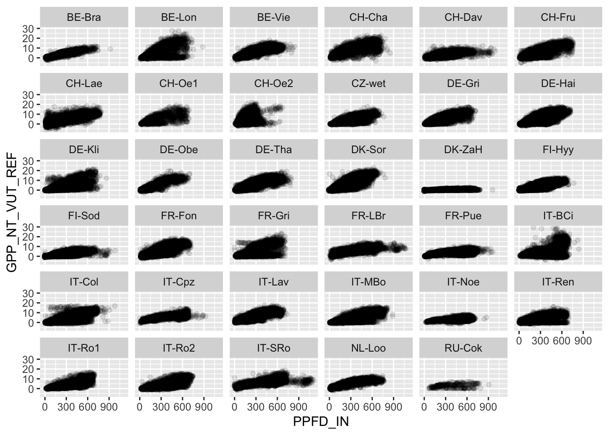
What do you notice? Does the relationship look similar for all sites?
Again, we get further if we have some a priori knowledge about the system that generated out data. Of course, PPFD just measures the incoming photosynthetically active light. We don’t know whether there are any leaves on the trees to absorb that light. While some trees shed their leaves during winter or during the dry period, others are evergreen and the fraction of PPFD they actually absorb doesn’t vary by far not as much as for deciduous trees. Therefore, whether a site is dominated by deciduous or evergreen vegetation should somehow affect how directly GPP is correlated with GPP. So there’s our hypothesis: Sites with evergreen vegetation should exhibit a higher R2 between GPP and PPFD than sites with deciduous vegetation. Remember that we have evaluated the R2 between GPP and PPFD already above and have it stored as a column rsq of our nested data frame ddf_allsites. We have also collected site meta-information about the vegetation type (it’s in column lai_fpar), and have joined the meta info onto the data. Unfortunately, it’s not quite ready to use. Since we need a TRUE/FALSE type of information of whether the vegetation type is evergreen or not, we have to take another step. Below, we take the strings of column lai_fpar and check whether it contains the sub-string "Evergreen", using the function str_detect() from the stringr package (part of the tidyverse). This boolean information makes up a new column that we call evergreen. Sounds like a lot of steps, but in the tidyverse, the code is short and clean:
gg <- ddf_allsites_nested_joined %>%
mutate(evergreen = str_detect(lai_fpar, "Evergreen")) %>%
ggplot(aes(y = rsq, x = evergreen)) +
geom_boxplot()
print(gg)
Eureka II! Indeed, the R2 between GPP and PPFD tend to be higher for sites with evergreen vegetation than for sites with deciduous vegetation. What we see here is a boxplot. It visualises the distribution of R2 by factors (evergreen). The fat horizontal like inside the box indicates the median, the lower and upper margins of the box are the 25% and 75% quantiles, the whiskers (vertical lines) extend 1.5 times the inter-quartile range, starting at the upper and lower margins of the box, or just to the smallest and largest values if they are within a shorter distance. Apparently, in our plot above, they are.
Boxplots are useful because they provide a visualisation of distrubtions that can be based on a very large number of underlying points. This yields “light” and clean figures. However, they also hide a lot of information and sometimes it’s ok to show more information without overloading the plot. For example, individual points can be shown in the plot above by geom_jitter(). Of course, the x-axis represents the level of the factor evergreen and when using a simple geom_points, all points would be located either at the position (given by the tick mark) of TRUE or FALSE. This would result in overplotting and thus hiding a large number of points. geom_jitter() takes care of this by slightly rearranging them in a random fashion along the x-axis. Note that the rearranged position along the x-axis doesn’t actually encode any information. However, as long as points are still separable along the “evergreen-axis,” this is acceptable.
gg + geom_jitter(color = "grey50", width = 0.1)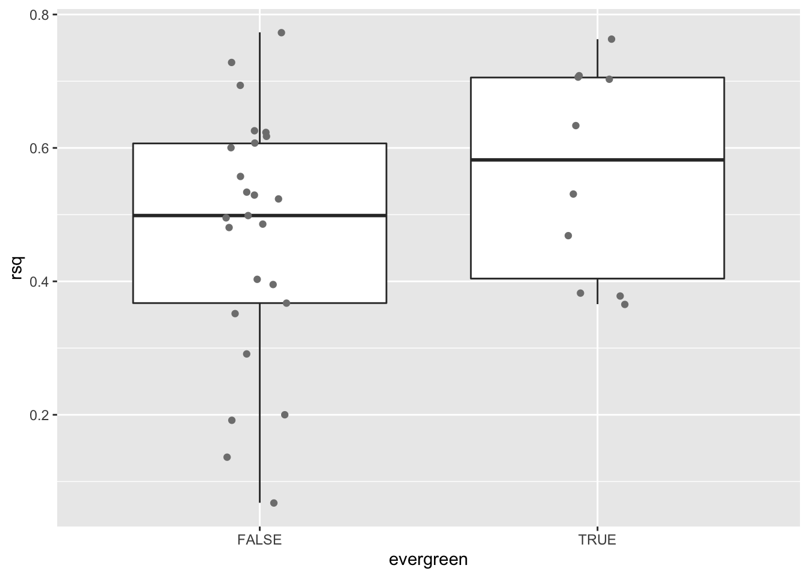
Note that in the two cells above, we have first stored the output of a ggplot() call as a new object that we named gg. Doing print(gg) just creates the respective plot. The advantage is that we can add visualisation elements or modify the theme or add labels to that object in a separate step.
Maybe you’ve asked yourself whether the magnitude of GPP varies much across vegetation types (column igbp_land_use in our dataset).
Let’s do another boxplot - because we can…
ddf_allsites_joined %>%
ggplot(aes(y = GPP_NT_VUT_REF, x = igbp_land_use)) +
geom_boxplot() +
coord_flip()## Warning: Removed 4016 rows containing non-finite values (stat_boxplot).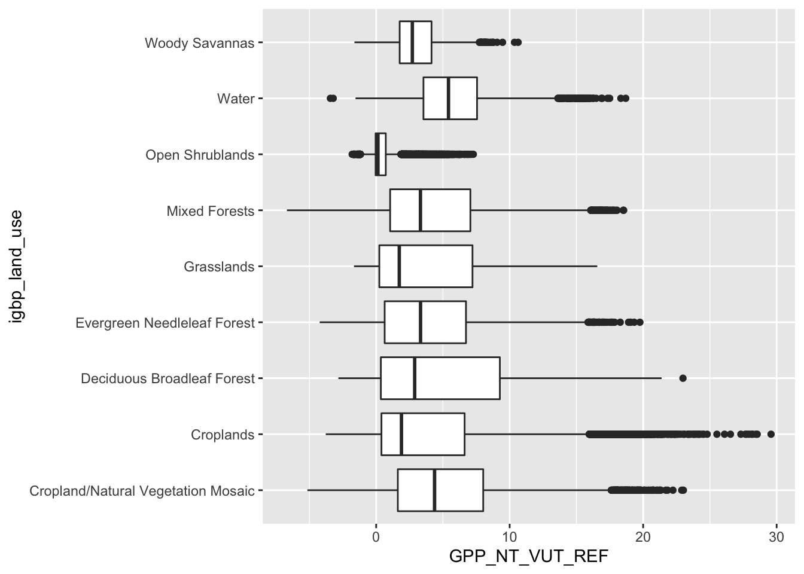
Here, you can see a number of points that are beyond the quartiles plot 1.5 times the inter-quartile range. They are plotted individually and are referred to as “outlying points.” We have also flipped the boxes to extend vertically. coord_flip() overrides what is specified by aes() in that it rotates it by 90º.
Before we finish, let’s save our nice daily data frame, after having selected interesting variables, having nested data by sites, and after having complemented it with site meta information. We may use it later in the course …
Since ddf_allsites_nested_joined is no longer a “flat” table (it’s nested), we cannot save it in a plain text-based format like CSV. Instead, we save it as an R object. In can be later loaded into an R session by load().
save(ddf_allsites_nested_joined, file = "data/ddf_allsites_nested_joined.RData")3.1.2.6 Exercise
For this week’s exercise open up the Rstudio environment. Remember to save all your changes to this notebook using git status, git add <filename>, git commit -m "your comment", git push.
Exercise 02 is about outlier removal and the visualisation of diurnal and seasonal cycles.
Get in touch with your teaching assistant if you have any further questions.